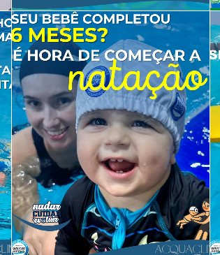
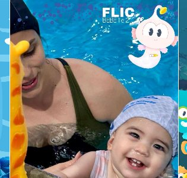
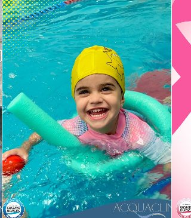
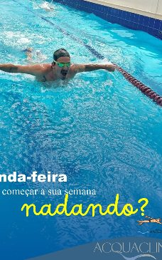
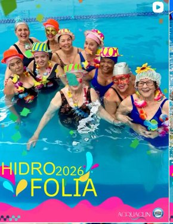
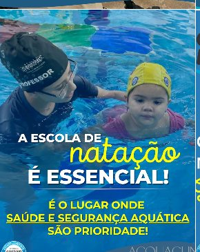
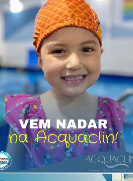
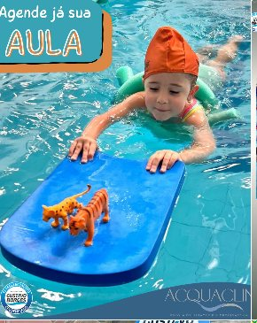
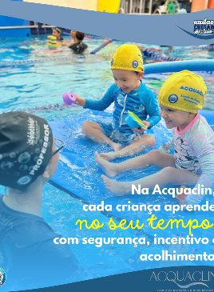

Aulas de natação para bebês, crianças e adultos, e hidroginástica, numa piscina aquecida, coberta e com água ionizada. Aplicamos a Metodologia Gustavo Borges, com níveis pedagógicos definidos e acompanhamento real da evolução de cada aluno.
Resposta em minutos no WhatsApp · sem compromisso

É comum pais matricularem os filhos e verem pouca evolução real — porque o problema quase nunca é técnica, é adaptação e confiança na água.
Com muitos alunos por professor, cada criança recebe poucos minutos de atenção individual por aula — o medo não é trabalhado no ritmo dela.
Sem níveis pedagógicos claros, o aluno fica anos na mesma fase sem saber o que precisa evoluir para avançar de turma.
Cloro em excesso arde os olhos e resseca a pele — desconfortos que fazem a criança associar a piscina a algo ruim.
Antes de qualquer técnica, o aluno constrói confiança na água: respiração, flutuação e controle corporal, no tempo dele.
Cada turma segue os níveis da Metodologia Gustavo Borges, com critérios objetivos de avanço — não por tempo de matrícula.
Ambiente coberto, com temperatura estável o ano todo e água tratada por ionização — menos cloro, mais conforto.
Você marca pelo WhatsApp e conhece a estrutura e o professor antes de decidir qualquer coisa.
O aluno é avaliado e entra no nível correto da Metodologia Gustavo Borges — nem abaixo, nem acima do que já sabe.
Turmas pequenas, separadas por faixa etária e estágio de evolução — bebê, infantil, adulto ou hidroginástica.
Professores registram o progresso de cada aluno e comunicam a você quando ele avança de nível.

Adaptação ao meio líquido com o acompanhamento de um responsável na água, do jeitinho e no tempo do bebê.

Turmas por faixa etária e nível pedagógico, seguindo a Metodologia Gustavo Borges do zero à técnica.

Para quem nunca aprendeu a nadar ou quer evoluir a técnica, com aulas adaptadas ao seu nível atual.

Atividade de baixo impacto para condicionamento físico, em turmas de adultos na piscina aquecida.

Antes de começar, avaliamos o estágio do aluno para colocá-lo na turma certa — sem custo.
Temperatura estável mesmo nos dias mais frios de Manhuaçu — sem aula cancelada por causa do clima.
Ambiente protegido de sol e chuva, com conforto para bebês, crianças e adultos em qualquer estação.
Tratamento que reduz a necessidade de cloro — menos irritação nos olhos e na pele, principalmente das crianças.



Fotos reais de alunos — @acquaclin_mgb
"Minha filha tinha muito medo de água e hoje já mergulha sozinha. A paciência dos professores fez toda diferença."
"A piscina aquecida faz toda a diferença no inverno. Nunca perdemos aula por causa do frio."
"Comecei a hidroginástica depois dos 50 e é a atividade que eu mais gosto na semana. Professores atenciosos."
* Depoimentos ilustrativos — substituir pelas avaliações reais do Google/Instagram antes de publicar
Bebês a partir de poucos meses já podem participar das aulas de adaptação ao meio líquido, sempre com um responsável na água. A partir daí, o aluno avança pelos níveis pedagógicos conforme evolui.
Sim. A piscina é coberta e aquecida o ano todo, então as aulas acontecem normalmente independente do clima em Manhuaçu.
Não. A hidroginástica é feita em pé, na parte rasa, e não exige que você saiba nadar — é indicada para qualquer idade e nível de condicionamento.
Você marca pelo WhatsApp, vem conhecer a estrutura e participa de uma aula para sentir como funciona antes de decidir se matricula.
Os valores variam conforme a turma e a quantidade de aulas por semana. Fale com a gente pelo WhatsApp para saber os horários com vaga disponível agora.
É grátis, sem compromisso, e leva menos de 1 minuto para agendar pelo WhatsApp.
Marcar aula experimental grátis →Rua Floriano Gonçalves Lacerda, 79 — Manhuaçu-MG
Rua Floriano Gonçalves Lacerda, 79
Manhuaçu — MG, 36900-000